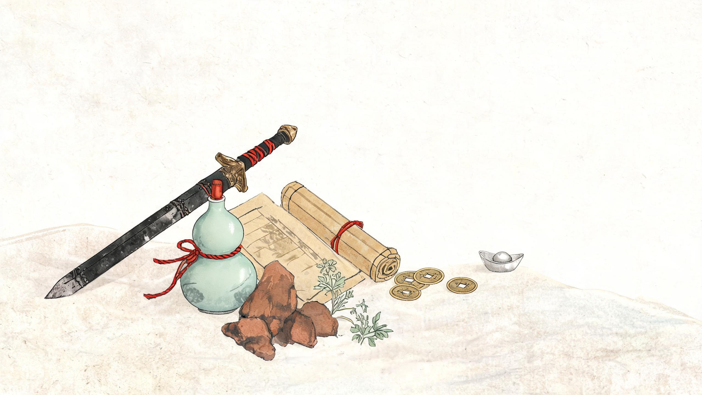

单机游戏背包系统设计落地参考
从大厂机制、UI 美工到每个具体子功能——面向武侠 RPG 的完整落地参考
壹核心结论：大厂背包的四条设计主线
扒完各大厂作品后可以提炼出一个共性：背包不是"仓库"，而是一台"决策器"。它的存在不是为了让你装下一切，而是让"带什么、留什么、扔什么"成为有意义的游戏决策。所有大厂设计都围绕下面四条主线展开。
限制制造决策
容量永远有限（重量/格子/网格），逼玩家在"带什么"上做取舍。代表：《上古卷轴》重量制、《暗黑破坏神》网格制、《塞尔达》格子制。限制本身就是玩法——取舍产生价值。
分类降低认知
用分类页签、稀有度色阶、图标规范，把"扫描背包找东西"的认知成本降到最低。代表：《原神》分类页签、《暗黑》稀有度配色。玩家 0.5 秒内应能定位物品大类。
对比加速判断
装备对比、属性增减高亮（绿↑红↓）、词条高亮，让"换不换"的判断在界面内完成，不用来回切换。代表：《巫师3》、《赛博朋克2077》。
整理减少痛苦
一键整理、自动堆叠、排序、筛选、搜索，把"整理背包"这件玩家最讨厌的事的成本压到最低。代表：《暗黑4》、SkyUI、《星露谷》。
四条主线对应到落地时的四个设计问题：容量怎么算？分类怎么分？对比怎么做？整理怎么省？下面四章逐一拆解。
贰背包容量机制：四种主流范式
容量机制决定了玩家"能带多少、怎么带"，是背包系统的地基。大厂主要采用四种范式，各有取舍。
① 重量制
代表：《上古卷轴5》·《巫师3》·《辐射》
机制：每件物品有重量，总重量有上限（如天际 300 负重）。
优点：拟真、数值灵活，可用技能/装备动态扩容；缺点：玩家需心算负重，UI 反馈弱，后期"捡垃圾"焦虑重。
② 格子制
代表：《塞尔达：旷野之息》·《王国之泪》
机制：每类物品固定一个格位，同类无限堆叠，格位数有限。
优点：极简、零整理成本；缺点：容量由"物品种类数"决定，种类一多就爆格。
③ 网格/形状制
代表：《暗黑破坏神》系列·《生化危机》·《逃离塔科夫》
机制：物品占网格形状（Tetris 式），需旋转摆放。
优点：空间感强、有策略性、大件小件视觉差异明显；缺点：整理成本最高，新手门槛高。
④ 槽位+堆叠制
代表：《原神》·《星穹铁道》· 主流手游
机制：每类物品一个槽位，可堆叠，有堆叠上限与总槽位上限。
优点：UI 简洁、易上手、适合手柄/触屏；缺点：数值膨胀后需频繁扩容。
拟真 · 心算成本高"] A --> C["格子制
极简 · 种类受限"] A --> D["网格制
策略 · 整理痛苦"] A --> E["槽位+堆叠制
易上手 · 主流"] E --> F["★ 武侠RPG 推荐
槽位+堆叠 为主"] D -.可选.-> F
| 维度 | 重量制 | 格子制 | 网格制 | 槽位+堆叠 |
|---|---|---|---|---|
| 代表作品 | 天际 / 巫师3 | 塞尔达 BOTW | 暗黑 / 生化危机 | 原神 / 星穹铁道 |
| 容量单位 | 重量数值 | 格位数 | 网格面积 | 槽位数 × 堆叠上限 |
| 整理成本 | 中 | 极低 | 高 | 低 |
| 策略深度 | 中 | 低 | 高 | 中 |
| 上手门槛 | 中 | 低 | 高 | 低 |
| 武侠适配度 | ★★☆ | ★★☆ | ★★★（可做锦囊格） | ★★★★★ |
叁物品分类与稀有度体系
分类降低认知的第一步，是把物品按"用途"而非"来源"归类。大厂分类高度趋同，武侠语境下可做本土化映射。
3.1 分类体系（大厂通用 → 武侠映射）
| 大厂通用分类 | 武侠 RPG 映射 | 堆叠 | 典型物品 |
|---|---|---|---|
| 武器 | 兵器 | 否 | 刀、剑、枪、棍、暗器 |
| 防具 | 防具 / 内甲 | 否 | 护甲、内甲、靴、饰品 |
| 消耗品 | 丹药 / 灵药 | 是（上限 99） | 金疮药、回气丹、解毒丹 |
| 材料 | 锻造 / 炼丹材料 | 是（上限 999） | 玄铁、朱砂、百年灵芝 |
| 技能书 | 秘籍 / 功法 | 是（同种叠） | 《易筋经》《独孤九剑》残卷 |
| 任务物品 | 信物 / 任务道具 | 否 | 令牌、密信、掌门信物 |
| 杂物 | 杂物 / 杂物 | 是 | 银两、酒、棋谱 |
3.2 稀有度色阶
稀有度色是背包里信息密度最高、玩家最先感知的视觉元素。各厂色阶大同小异，核心是颜色必须全局一致（掉落、背包、商店、装备栏同一套色）。
| 游戏 | 色阶（低→高） | 备注 |
|---|---|---|
| 《暗黑破坏神》 | 白 → 蓝 → 黄 → 橙 → 绿（套装） | 绿为套装专属色 |
| 《原神》 | 白 → 绿 → 蓝 → 紫 → 金 | 五星金，四星紫 |
| 《巫师3》 | 白 → 绿 → 蓝 → 紫 → 橙 | 遗物级橙色 |
| 《魔兽世界》 | 灰 → 白 → 绿 → 蓝 → 紫 → 橙 → 金 | 灰为垃圾 |
| 武侠 RPG 建议 | 白 → 绿 → 蓝 → 紫 → 橙 → 金 | 凡品→良品→上品→珍品→绝品→神品 |
肆UI 布局范式：四种主流 + 武侠推荐
布局决定了玩家"怎么找东西"。大厂主流是四种范式，武侠 RPG 推荐三栏混合布局。
① 网格布局
代表：《暗黑》·《POE》
大图标网格，一屏看最多物品，适合大量掉落快速浏览；信息密度高但详情需点开。
② 列表布局
代表：《天际》·SkyUI
单列列表 + 右侧详情，信息密度高，适合属性复杂的 RPG；滚动成本高。
③ 混合布局
代表：《巫师3》·《赛博朋克2077》
左分类 + 中列表 + 右详情/对比，三栏协同，信息最全，是 3A 主流。
④ 环形快捷菜单
代表：《艾尔登法环》· 魂系
非主背包，用于战斗中快速切换道具/法术；强调即时性，弱化管理。
图标 + 名称 + 数量 + 稀有度色"] end subgraph RIGHT["右侧 · 详情 / 装备预览"] R1["物品详情 Tooltip
属性 · 词条 · 描述"] R2["与已装备对比
绿↑ / 红↓"] R3["角色装备预览"] end LEFT --> MID --> RIGHT
伍界面美工：信息层级与武侠风适配
美工不是"好看"，而是让信息层级一眼可读。大厂图标与界面遵循一套可复用的规范。
5.1 大厂通用美工原则
- 信息优先级：稀有度色 > 图标 > 名称 > 数量 > 描述。玩家视线按此顺序扫过。
- 图标规范：统一视角（3/4 俯视或正面）、统一描边、统一背景色块（稀有度底色）。
- Tooltip 密度：属性数值用等宽字体对齐，词条用颜色区分（增益绿/减益红）。
- 状态可视化：装备中/已锁定/新获得/耐久低，用角标与图标叠加表达，不占额外文字。
- 对比高亮：与已装备对比时，提升属性绿色↑、下降红色↓，一眼可判。
5.2 武侠风视觉适配
背景与质感
宣纸/水墨纹理底，卷轴式边框，云纹/回纹装饰线。整体低饱和、留白多，突出物品本身。
字体
标题用书法体（如颜体/行楷），正文用宋体/楷体。稀有度名可用印章式红章点缀。
图标风格
水墨工笔风：丹药用葫芦/丹丸，秘籍用卷轴，兵器用剪影。统一描边与底色块。
| 元素 | 大厂通用做法 | 武侠风落地 |
|---|---|---|
| 背景 | 深色半透明面板 | 宣纸米白 + 水墨纹理 |
| 边框 | 细线/描边 | 卷轴边、云纹、回纹 |
| 标题字体 | 无衬线粗体 | 书法体（行楷/颜体） |
| 稀有度色 | 白绿蓝紫橙金 | 同色阶 + 中式命名（凡/良/上/珍/绝/神） |
| 图标 | 统一视角 + 稀有度底色 | 水墨工笔 + 统一描边 |
| 装饰 | 极简 | 印章、水墨晕染、留白 |
陆子功能清单：从 P0 到 P2 的落地优先级
把大厂背包拆成一个个可落地的子功能，按"没有它玩家会骂"到"有它体验更好"排优先级。P0 是 MVP 必须，P1 是完整版，P2 是锦上添花。
| 子功能 | 实现要点 | 参考游戏 | 优先级 |
|---|---|---|---|
| 排序 | 类型→稀有度→等级/名称；支持自定义排序 | D4、SkyUI、星露谷 | P0 |
| 筛选/过滤 | 类型/稀有度/属性/状态多维组合过滤 | 原神、赛博朋克、D4 | P0 |
| 搜索 | 名称关键字、模糊匹配、叠加筛选 | SkyUI、D4 | P0 |
| 装备对比 | 与已装备逐项对比，绿↑红↓高亮 | 巫师3、赛博朋克 | P0 |
| 快速装备/使用 | 点击即装备/使用，右键快捷操作 | 全主流 | P0 |
| 物品详情 Tooltip | 属性/词条/描述/来源，等宽对齐数值 | 全主流 | P0 |
| 一键整理 | 自动堆叠同类、压实空槽、按规则排序 | D4、星露谷 | P0 |
| 堆叠与数量显示 | 堆叠上限、数量角标、满格提示 | 原神 | P0 |
| 丢弃/出售 | 确认弹窗、批量丢弃、出售估价 | 全主流 | P0 |
| 分类页签 | 兵器/防具/丹药/材料/秘籍/任务 | 原神、巫师3 | P0 |
| 仓库/储物箱 | 独立存储空间，可扩容，跨场景保留 | 暗黑、巫师3 | P1 |
| 耐久度与修理 | 耐久条、低耐久警示、修理 NPC/道具 | 巫师3、天际 | P1 |
| 物品锁定/收藏 | 锁定防误卖误丢，收藏置顶 | 原神、D4 | P1 |
| 批量操作 | 批量出售/分解/使用，多选模式 | D4、POE | P1 |
| 新物品标记 | NEW 角标，查看后消失 | 原神、巫师3 | P1 |
| 物品来源提示 | Tooltip 标注掉落/任务/商店来源 | D4、原神 | P1 |
| 自定义排序/收藏夹 | 玩家自定义排序规则与收藏分组 | SkyUI | P2 |
| 物品图鉴/收集册 | 已见/已收集统计，收集奖励 | 原神、星露谷 | P2 |
| 快捷栏配置 | 战斗中快速使用丹药/暗器 | 艾尔登法环 | P2 |
| 背包扩容 | 购买/任务解锁扩容，行囊锦囊道具 | 塞尔达、暗黑 | P2 |
| 自动整理规则 | 按玩家预设规则自动归类/分解 | POE 过滤器 | P2 |
柒武侠 RPG 落地建议与分阶段路线
把大厂经验落到本项目（Godot 武侠 RPG），需要与现有系统对接。以下是关键对接点与分阶段落地路线。
7.1 与现有系统的对接点
| 背包子功能 | 对接现有模块 | 说明 |
|---|---|---|
| 丹药使用（buff） | PlayerState.time_buffs | 增益丹药按系统时钟记录属性/数值/到期时间戳，到期自动失效 |
| 异常状态清除 | PlayerState.clear_status() | 未处于异常状态返回 NOT_AFFLICTED 且不消耗物品 |
| 战斗中用药限制 | 战斗场景守卫 | 战斗中禁止使用消耗品，仅战斗前背包提前使用，返回 NOT_ALLOWED_IN_BATTLE |
| 一键整理 | inventory_service.organize() | 自动堆叠同类、压实空槽、按名称→类型→稀有度排序，锁定实例不参与合并 |
| 物品图标 | UIManager.get_icon/has_icon | 从 resources/icons/{enemies,npc}/<id>.png 获取，缺图回退阵营色块 |
| 装备属性 | combat_core.gd 数值模型 | 装备对比需读取根属性→面板属性→判定属性三层数值 |
| 物品配置 | skills.json / 物品配置表 | 秘籍、丹药、材料的字段定义与稀有度、堆叠上限 |
7.2 分阶段落地路线
分类页签 + 列表 + 详情
堆叠 + 排序 + 一键整理
丢弃/出售 + 快速使用 → 完整版（P1）
装备对比 + 筛选/搜索
仓库 + 锁定 + 批量操作
NEW 标记 + 耐久修理 → 增强版（P2）
图鉴 + 快捷栏 + 扩容
自定义排序 + 自动整理规则
inventory_service、PlayerState、UIManager 的接口契约，避免重复造轮子。
7.3 武侠特色子功能（差异化亮点）
- 秘籍研读：秘籍类物品可"研读"消耗，习得功法/招式，与 skills.json 功法系统打通。
- 炼丹/锻造：材料类物品进入合成界面，产出丹药/装备，材料堆叠上限高（999）。
- 行囊锦囊：特殊扩容道具，以"锦囊/储物袋"形式解锁额外格位，贴合武侠设定。
- 信物系统：任务信物自动收纳到独立页签，不占主背包空间，避免任务物品挤占。
- 酒与棋谱：杂物类可加入"品鉴/对弈"小玩法，让杂物也有存在价值。